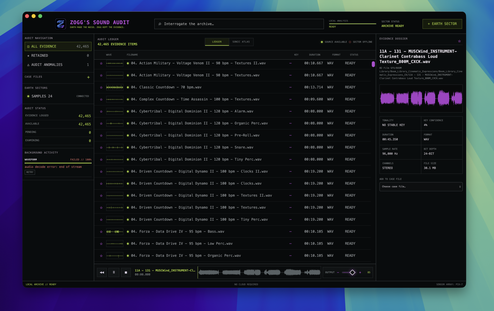
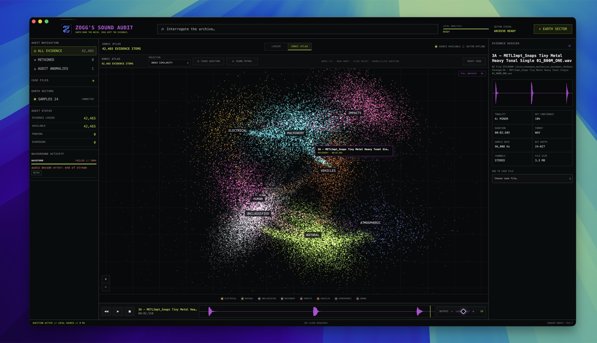

YOUR SOUND LIBRARY
Register the folders you already use. The database indexes them in place; it does not swallow, rename or relocate the originals.
NATIVE MACOS SOUND ARCHIVE / V0.5.2
Bring your own sound library. Zogg indexes and analyzes it locally, hears pitch and rhythm, extracts editable MIDI and reusable grooves, then lets you drag the untouched originals or derived control data straight into your creative tools.
 SUBJECT: ZOGG / EXTRATERRESTRIAL AUDITOR
SUBJECT: ZOGG / EXTRATERRESTRIAL AUDITOR
AUDITOR ON RECORD
Zogg audited Earth and kept the only part worth organizing: the noise. Every impact, machine, atmosphere and unexplained signal remains local, searchable and ready to leave the archive.
“Unknown is not sacred. Unexplained is not yours.”
THE LOCAL ARCHIVE
Filename, path, technical metadata, musical evidence and cached waveforms remain searchable without uploading a single byte.
Register the folders you already use. The database indexes them in place; it does not swallow, rename or relocate the originals.
Prewarmed CoreAudio playback means selecting a sound feels like an instrument, not a website.
Drag the ↗ filename to a DAW, Finder or PRS to receive the original file. Right-click to audition, favourite, analyze, group, send to crew or show it in Finder.
ZOGG MUSICAL AUDIT
Deterministic local evidence first. Pitch, tempo, groove and transcription confidence stay attached to the source fingerprint; weak evidence remains unknown instead of becoming fiction.
Inspect pitch, note, tuning, key, tempo, transients, loop likelihood and confidence. Every result is versioned and becomes stale when the source changes.
Generate monophonic MIDI with original timing, velocity and pitch bend, or a clearly labelled harmonic interpretation. Optional local MuScriptor support adds true polyphonic extraction.
Detect kick, snare, clap, hats, toms and percussion while preserving swing, ghost notes and microtiming. Export through General MIDI, Ableton, Logic or custom maps.
Hear the original and extracted notes together, isolate rhythmic roles, compare original, cleaned and quantized timing, then drag the useful result into your DAW.
Send extracted grooves to KITKAT, pitched MIDI to Tomislav and external synths, or source evidence to PIX-7, WEB-6, ALi and Zogg's similar one-shot patrol.
One sound at a time, persistent pause and resume, crash recovery, current-result skipping and separate failure counts. The archive remains usable while analysis continues.
Every selected sound receives a detailed waveform, transport scrubber, technical dossier and deterministic local pitch, tempo and rhythm evidence with disclosed confidence—not invented metadata.
WORKING APPLICATION
The current native macOS app running against a real 60,117-file production library. Public installations begin empty, then become the user's own searchable, analyzable and playable sound universe.


Native. Local. Fast. Slightly suspicious of folders.
DOWNLOAD FOR MAC↓ SHA-256 CHECKSUM MACOS 14+ / APPLE SILICON / LOCAL INDEPENDENT BUILDDeveloper ID signed and Apple notarized. Sparkle updates enabled.